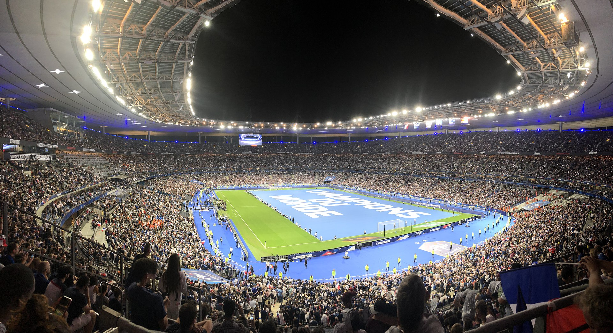
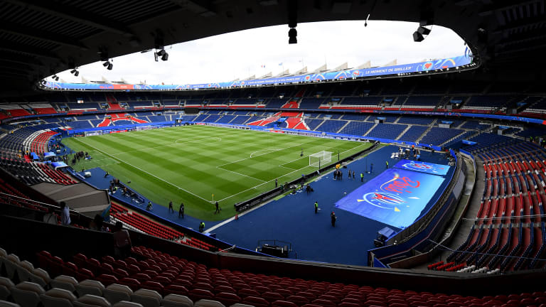

Most Famous French Stadiums
Stade de France
Stade de France is the most famous and also the national stadium of France. It is located north of Paris in the commune of Saint-Denis.It has a capacity of 80,698 which makes it the eighth biggeststadium in Europe. It is used by the national team of France for hosting matches from international competitions. It is the biggest stadium in entire Europe for track and field events. It was originally built for the 1998 FIFA World Cup and On 12th of July 1998, France defeated Brazil in the 1998 FIFA World Cup Final contested at the stadium. It is licensed as a category 4 stadium by UEFA and has hosted matches at the Uefa Champions League and FIFA World Cup. 
Parc des Princes
Park des Princes is one of the biggest stadiums in France. It has a seating capacity of 47,929 spectators and is the home stadium of the French hegemone Paris Saint-Germain since 1974. Before the opening of the Stade de France in 1998, it was the main stadium of the French national football team. The Parc des Princes pitch is surrounded by four stands which names are Tribune Borelli, Tribune Auteuil, Tribune Paris and Tribune Boulogne. It was conceived by the two architects Roger Taillibert & Siavash Teimouri, and the current version of the Parc des Princes officially opened in June 1972, and costed a total of over 100 million francs.The stadium is the third one which has been built on the site, the first opened its doors in 1897 and the second in 1932. PSG registered its record home attendance in 1983, when almost 50 000 spectators atched their team win over Waterschei in the UEFA Cup Winners' Cup quarter-finals. 